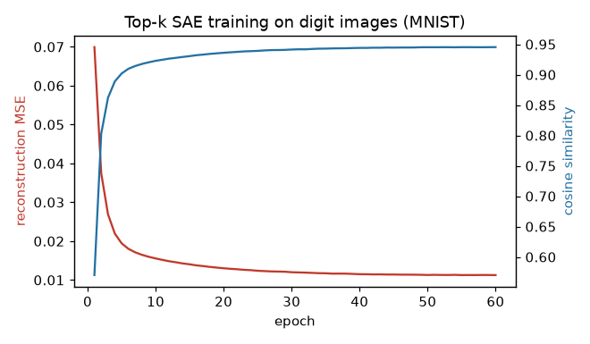

Getting Started
This page explains the ideas behind Compresso from the ground up, then walks through a first end-to-end run. If you just want a snippet to copy, jump to Your first run; if you want to see what a sparse autoencoder learns, read the A First Example: Seeing What an SAE Learns next.
Why sparse representations?
Most modern models hand you dense embeddings: a 384- or 4096-dimensional vector where every coordinate is non-zero and no single coordinate means anything on its own. Dense vectors are great for similarity search but awkward for interpretation, storage, and clustering — every dimension is entangled with every other.
A sparse representation rewrites each vector as a short list of
(feature, value) pairs: only a handful of coordinates are active, and each
active coordinate tends to stand for one human-meaningful concept. Compresso
turns dense embeddings into fixed-size sparse codes and gives you tools to
store, reload, and cluster them.
The top-k sparse autoencoder
The workhorse is a top-k sparse autoencoder (SAE). It is a small,
single-hidden-layer autoencoder with one twist: the hidden layer keeps only its
k largest activations per input and zeroes out the rest.
dense x ─▶ encoder (Linear) ─▶ keep top-k ─▶ sparse code z ─▶ decoder (Linear) ─▶ reconstruction x̂
(D dims) (k of H active) (D dims)
Training minimizes the reconstruction error between x and x̂. Because
the bottleneck can only pass k numbers through, the encoder is pushed to
discover a dictionary of reusable features (the decoder’s columns) such
that every input can be rebuilt from just k of them.
Three properties make this useful:
Fixed-k sparsity. Every code has exactly
knon-zeros — not “aboutk”. Storage and downstream algorithms can rely on a constant budget.Overcompleteness. The hidden width
His usually larger than the input dimD. With more slots than dimensions, individual features specialize instead of being forced to share.Interpretability. Each learned feature usually corresponds to a concept; the A First Example: Seeing What an SAE Learns and Clustering Sparse Codes pages show this concretely.
Key objects
You can drive everything through one high-level class and one container:
TopKSAETrainer/TopKSAEConfigA scikit-learn-style wrapper:
fittrains on a dense matrix,transformreturns sparse codes,fit_transformdoes both. All hyperparameters live in theTopKSAEConfigdataclass.SRPTensorThe sparse output container (“Sparse Representation”). It stores codes as
(rows, k)column-index and value tensors with a logical dense shape, and converts to dense / SciPy / torch-sparse on demand. See Input and Output.
If you need the layers underneath (custom training loops, the straight-through estimator, sparsity schedules), see Advanced Usage.
Your first run
The input is always a 2D dense matrix of shape (n_samples, dim) — a NumPy
array or a Torch tensor. Here we use random data so the snippet runs anywhere:
import numpy as np
from compresso import TopKSAEConfig, TopKSAETrainer
embeddings = np.random.randn(10_000, 512).astype("float32")
trainer = TopKSAETrainer(
TopKSAEConfig(
hidden_dim=4096, # H: number of dictionary features (overcomplete)
k=32, # active features kept per row
batch_size=1024,
epochs=50,
lr=1e-3,
decay=True, # cosine learning-rate decay
)
)
srp = trainer.fit_transform(embeddings)
print(srp) # SRPTensor(shape=(10000, 4096), k=32, ...)
print(srp.k, srp.nnz) # 32 320000
fit_transform returns an SRPTensor with logical shape
(10_000, 4096) holding exactly 32 values per row. Non-float32 inputs
are converted to the model’s dtype before training and encoding.
Fit and transform separately
In practice you often train on one split and encode another (for example, fit on training items, then encode cold items you never trained on):
trainer.fit(embeddings[train_idx]) # learn the dictionary
codes_all = trainer.transform(embeddings) # encode everything -> SRPTensor
dense = trainer.reconstruct(embeddings[:8]) # (8, 512) reconstructions
codes = trainer.encode(embeddings[:8]) # (8, 4096) dense sparse codes
After fit, trainer.history is a list of per-epoch dicts
(reconstruction_mse, cosine_loss, active_count, dead_features,
lr) you can plot to monitor training:
{kind=link}

What’s next
A First Example: Seeing What an SAE Learns — train an SAE on images and see the learned features.
Input and Output — the input contract and the
SRPTensorformat in full: conversions, saving, and reloading in another project.Advanced Usage — drop below the trainer to the raw modules.
Clustering Sparse Codes — turn sparse codes into interpretable clusters on a real recommender dataset.